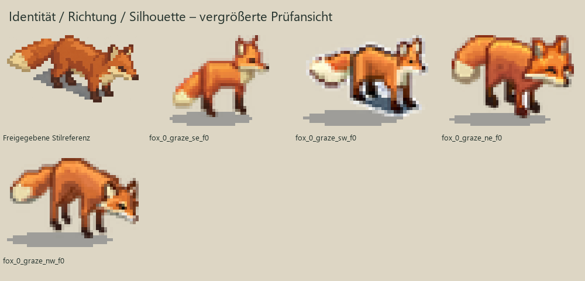
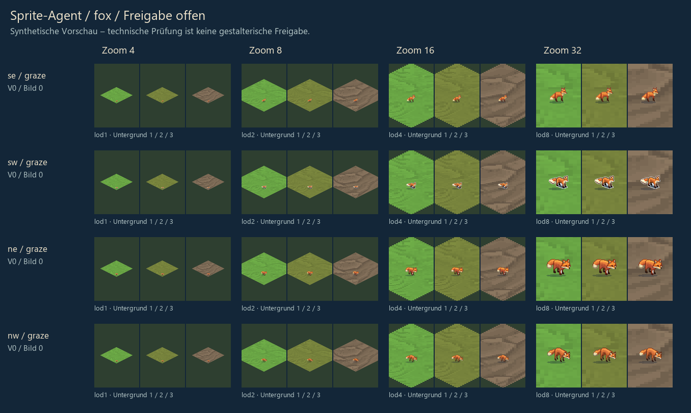

Kleine Silhouette instabil/zu wenig Pixel: eigene LOD zur Sichtprüfung vorschlagen: sprites/fox_0_graze_se_f0__lod1.png
Kleine Silhouette instabil/zu wenig Pixel: eigene LOD zur Sichtprüfung vorschlagen: sprites/fox_0_graze_sw_f0__lod1.png
Kleine Silhouette instabil/zu wenig Pixel: eigene LOD zur Sichtprüfung vorschlagen: sprites/fox_0_graze_ne_f0__lod1.png
Kleine Silhouette instabil/zu wenig Pixel: eigene LOD zur Sichtprüfung vorschlagen: sprites/fox_0_graze_nw_f0__lod1.png
5 Pixel in getrennten Komponenten entfernt; auf verlorene Motivteile prüfen.
2 Pixel in getrennten Komponenten entfernt; auf verlorene Motivteile prüfen.
4 Pixel in getrennten Komponenten entfernt; auf verlorene Motivteile prüfen.
3 Pixel in getrennten Komponenten entfernt; auf verlorene Motivteile prüfen.
Stil B getroffen?
Gleiche Figur in allen Ansichten?
Blickrichtungen und Anatomie korrekt?
Fußpunkt tatsächlich zwischen den Füßen?
Helle Fellteile und Kanten sauber freigestellt?
Ohren, Beine und Schwanz bei Zoom 4/8 lesbar?
Bei Animation: plausible Bewegung und kein Größen-/Positionsspringen?


Auswahl und Änderungen an Dennis zurückgeben. Eine Freigabe wird separat über den Befehl approve protokolliert; diese Seite behauptet keine Zustimmung.